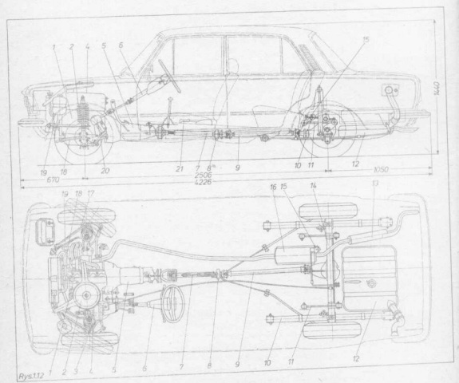

Polski Fiat 125p
Rozmieszczenie podzespołów samochodu (na podst. Budowa, eksploatacja i naprawa - Polski Fiat 125p, wyd. 1982)
| Lp | Nazwa |
|---|---|
| 1 | Silnik |
| 2 | Filtr powietrza |
| 3 | Urządzenia wspomagające hamulców |
| 4 | Sprężyna przedniego zawieszenia |
| 5 | Skrzynia biegów |
| 6 | Wał kierownicy |
| 7 | Przedni wał napędowy |
| 8 | Podpora wału napędowego |
| 9 | Tylny wał napędowy |
| 10 | Resor |
| 11 | Drążek reakcyjny |
| 12 | Zbiornik paliwa |
| 13 | Tłumik tylny |
| 14 | Tylny most |
| 15 | Korektor hamowania |
| 16 | Tłumik przedni |
| 17 | Drażek reakcyjny |
| 18 | Stabilizator |
| 19 | Wahacz górny |
| 20 | Przekładnia kierownicza |
| 21 | Dźwignia hamulca postojowego |